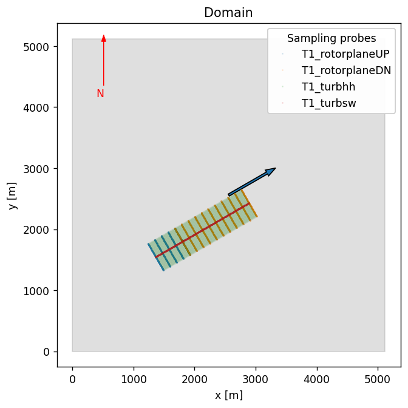
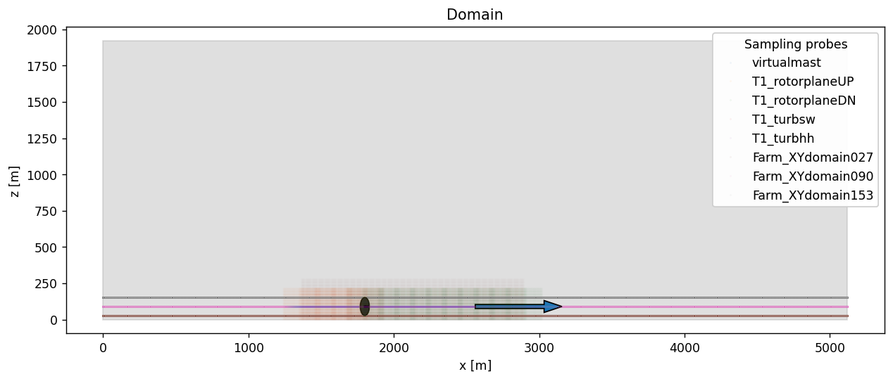

Create the convective ABL case for NREL5MW runs
# Add any possible locations of amr-wind-frontend here
amrwindfedirs = ['/projects/wind_uq/lcheung/amrwind-frontend',
'/ccs/proj/cfd162/lcheung/amrwind-frontend/']
import sys, os, shutil
for x in amrwindfedirs: sys.path.insert(1, x)
# Load the libraries
import amrwind_frontend as amrwind
import matplotlib.pyplot as plt
import numpy as np
import math
import pandas as pd
import postproamrwindsample as ppsample
import time
import utm
import shutil
import yaml
# Also ignore warnings
import warnings
warnings.filterwarnings('ignore')
# Make all plots inline
%matplotlib inline
/ascldap/users/lcheung/.local/lib/python3.9/site-packages/pandas/core/computation/expressions.py:21: UserWarning: Pandas requires version '2.8.4' or newer of 'numexpr' (version '2.8.1' currently installed).
from pandas.core.computation.check import NUMEXPR_INSTALLED
/ascldap/users/lcheung/.local/lib/python3.9/site-packages/pandas/core/arrays/masked.py:60: UserWarning: Pandas requires version '1.3.6' or newer of 'bottleneck' (version '1.3.4' currently installed).
from pandas.core import (
# Start the AMR-Wind case
case = amrwind.MyApp.init_nogui()
rundir = './'
originalinput = 'abl.inp'
outputfile = '../input_files/convective_abl.inp'
# Load the starting point
# This assumes that rundir was already set up with setup.sh (see https://github.com/Exawind/exawind-cases/blob/main/16_turb_abl_fsi/setup.sh)
os.chdir(rundir)
case.loadAMRWindInput(originalinput)
CANNOT update: ABLMeanBoussinesq use forcechange=True in setval()
OrderedDict([('io.line_plot_int', '1'),
('CoriolisForcing.turn_off_vertical_force', 'True'),
('tagging.static_refinement', 'false'),
('tagging.static_refinement_def', 'static_box.txt')])
# Remove static refinement from the static_box.txt file
case.extradictparams.pop('tagging.static_refinement', None)
case.extradictparams.pop('tagging.static_refinement_def', None)
'static_box.txt'
# Set the tolerances to match other ABL runs
case.setAMRWindInput('diffusion.mg_rtol', 1.0e-8)
case.setAMRWindInput('diffusion.mg_atol', 1.0e-8)
case.setAMRWindInput('mac_proj.mg_rtol', 1.0e-8)
case.setAMRWindInput('mac_proj.mg_atol', 1.0e-8)
case.setAMRWindInput('nodal_proj.mg_rtol', 1.0e-8)
case.setAMRWindInput('nodal_proj.mg_atol', 1.0e-8)
case.setAMRWindInput('temperature_diffusion.mg_rtol', 1.0e-8)
case.setAMRWindInput('temperature_diffusion.mg_atol', 1.0e-8)
Add a turbine
# This is a dummy turbine, just to get the dimensions of the turbine placement correct
turbinetype = case.get_default_turbinetypedict()
turbinetype['turbinetype_name'] = 'NREL5MW_junk'
turbinetype['Actuator_type'] = 'UniformCtDisk'
turbinetype['Actuator_rotor_diameter'] = 126.0
turbinetype['Actuator_hub_height'] = 90.0
turbinetype['Actuator_epsilon'] = [2.5]
turbinetype['Actuator_output_frequency'] = 1
turbinetype['Actuator_diameters_to_sample']= 5.0
turbinetype['Actuator_num_points_r'] = 20
turbinetype['Actuator_num_points_t'] = 3
turbinetype['Actuator_thrust_coeff'] = 0.2
case.add_populatefromdict('listboxturbinetype', turbinetype)
# Build the CSV input file of turbine layouts for amrwind-frontend
options=""
turbinescsv="""
# CSV file should have columns with
# name, x, y, type, yaw, hubheight, options
T1, 1800, 1800, NREL5MW_junk, 240.0, ,
"""
case.setAMRWindInput('turbines_csvtextbox', turbinescsv)
case.setAMRWindInput('turbines_deleteprev', True)
case.setAMRWindInput('turbines_createnewdomain', False)
case.turbines_createAllTurbines()
# Print out existing list of turbines, just to confirm that the turbines got made
print(case.listboxpopupwindict['listboxactuator'].getitemlist())
['T1']
Add refinement regions (optional)
## Add refinement zones
refinementcsv="""
# CSV file should have columns with
# level, upstream, downstream, lateral, below, above, options
level, upstream, downstream, lateral, below, above, options
#0, 2160, 2160, 2160, 90, 200, center:specified units:meter orientation:x centerx:2560 centery:2560 centerz:90 name:level1
#1, 1600, 1600, 1600, 90, 200, center:specified units:meter orientation:x centerx:2000 centery:2000 centerz:90 name:level2
0, 5, 10, 5, 0.75, 2,
1, 2.5, 5, 2, 0.75, 1.5,
2, 1.25, 2.0, 1.25, 0.75, 1.0,
3, 0.75, 0.75, 1.00, 0.75, 0.75,
"""
case.setAMRWindInput('refine_csvtextbox', refinementcsv)
case.setAMRWindInput('refine_deleteprev', True)
# Uncomment this to create refinement zones
#case.refine_createAllZones()
case.estimateMeshSize()
ESTIMATED MESH SIZE
Level Ncells Cell Size
0 50331648 10.0 x 10.0 x 10.0
TOTAL: 50331648
Add some sampling planes
# First delete everything that already exists
case.listboxpopupwindict['listboxsampling'].deleteall()
case.listboxpopupwindict['listboxpostprosetup'].deleteall()
## virtual metmast measurements
metmastpprosetup = case.get_default_postprosetupdict()
metmastpprosetup['postprocessing_setup_name'] = 'metmast_'
metmastpprosetup['postprocessing_setup_type'] = 'Sampling'
metmastpprosetup['postprocessing_setup_output_frequency'] = 1
metmastpprosetup['postprocessing_setup_fields'] = ['velocity', 'temperature', 'tke']
case.add_postprosetup(metmastpprosetup, verbose=True)
sampledict = case.get_default_samplingdict()
sampledict['sampling_name'] = 'virtualmast'
sampledict['sampling_outputto'] = 'metmast_'
sampledict['sampling_type'] = 'LineSampler'
sampledict['sampling_l_num_points'] = 20
sampledict['sampling_l_start'] = [1800, 1800, 10.0]
sampledict['sampling_l_end'] = [1800, 1800, 200.0]
case.add_sampling(sampledict, verbose=False)
postprocessing_setup_name: 'metmast_'
postprocessing_setup_type: 'Sampling'
postprocessing_setup_output_frequency: 1
postprocessing_setup_fields: ['velocity', 'temperature', 'tke']
postprocessing_setup_derived_fields: None
postprocessing_setup_averaging_window: None
postprocessing_setup_averaging_start_time: None
postprocessing_setup_averaging_stop_time: None
outputoptions="outputvars:velocity;tke;temperature outputfreq:100"
samplingcsv="""
# CSV file should have columns withturbinescsv
# name, type, upstream, downstream, lateral, below, above, n1, n2, options
name, type, upstream, downstream, lateral, below, above, n1, n2, options
rotorplaneUP, rotorplane, 4, 0, 2, 0.7, 1, 11, 11, usedx:0.05 outputto:rotorplaneUP_ orientation:nacdir {outputoptions} noffsets:4
rotorplaneDN, rotorplane, 0, 10, 2, 0.7, 1, 11, 11, usedx:0.05 outputto:rotorplaneDN_ orientation:nacdir {outputoptions} noffsets:10
turbsw, streamwise, 4, 10, 0, 0.7, 1.5, 11, 11, usedx:0.05 outputto:turbsw_ orientation:nacdir {outputoptions} noffsets:0
turbhh, hubheight, 4, 10, 2, 0, 0, 11, 11, usedx:0.05 outputto:turbhh_ orientation:nacdir {outputoptions} noffsets:0
XYdomain027, hubheight, 8, 8, 2, 0, 90, 11, 11, units:meter usedx:10 outputto:XYdomain_027_ orientation:nacdir center:specified centerx:100 centery:100 centerz:27 wholedomain:1 {outputoptions} noffsets:0
XYdomain090, hubheight, 8, 8, 2, 0, 90, 11, 11, units:meter usedx:10 outputto:XYdomain_090_ orientation:nacdir center:specified centerx:100 centery:100 centerz:90 wholedomain:1 {outputoptions} noffsets:0
XYdomain153, hubheight, 8, 8, 2, 0, 153, 11, 11, units:meter usedx:10 outputto:XYdomain_153_ orientation:nacdir center:specified centerx:100 centery:100 centerz:153 wholedomain:1 {outputoptions} noffsets:0
""".format(outputoptions=outputoptions)
case.setAMRWindInput('sampling_csvtextbox', samplingcsv)
case.setAMRWindInput('sampling_deleteprev', False)
case.sampling_createAllProbes(verbose=False)
# Print out existing list of turbines
print(case.listboxpopupwindict['listboxsampling'].getitemlist())
['virtualmast', 'T1_rotorplaneUP', 'T1_rotorplaneDN', 'T1_turbsw', 'T1_turbhh', 'Farm_XYdomain027', 'Farm_XYdomain090', 'Farm_XYdomain153']
fig, ax = plt.subplots(figsize=(6,6), facecolor='w', dpi=125)
# Set any additional items to plot
case.popup_storteddata['plotdomain']['plot_turbines'] = case.listboxpopupwindict['listboxactuator'].getitemlist()
case.popup_storteddata['plotdomain']['plot_refineboxes'] = case.listboxpopupwindict['listboxtagging'].getitemlist()
case.popup_storteddata['plotdomain']['plot_sampleprobes'] = ['T1_rotorplaneUP', 'T1_rotorplaneDN', 'T1_turbhh', 'T1_turbsw',] #case.listboxpopupwindict['listboxsampling'].getitemlist() #['p_hub']
case.popup_storteddata['plotdomain']['plot_sampleprobes_style'] = "{'markersize':.25, 'marker':'.', 'linestyle':'None', 'alpha':0.1}"
case.popup_storteddata['plotdomain']['plot_chooseview'] = 'XY'
case.plotDomain(ax=ax)

fig, ax = plt.subplots(figsize=(12,6), facecolor='w', dpi=125)
# Set any additional items to plot
case.popup_storteddata['plotdomain']['plot_turbines'] = case.listboxpopupwindict['listboxactuator'].getitemlist()
case.popup_storteddata['plotdomain']['plot_refineboxes'] = case.listboxpopupwindict['listboxtagging'].getitemlist()
case.popup_storteddata['plotdomain']['plot_sampleprobes'] = case.listboxpopupwindict['listboxsampling'].getitemlist() #['p_hub']
case.popup_storteddata['plotdomain']['plot_sampleprobes_style'] = "{'markersize':.1, 'marker':'.', 'linestyle':'None', 'alpha':0.1}"
case.popup_storteddata['plotdomain']['plot_chooseview'] = 'XZ'
case.plotDomain(ax=ax)

case.removeturbines()
print(case.writeAMRWindInput(outputfile))
# --- Simulation time control parameters ---
time.stop_time = 15000.0 # Max (simulated) time to evolve [s]
time.max_step = -1
time.fixed_dt = 0.5 # Fixed timestep size (in seconds). If negative, then time.cfl is used
time.checkpoint_interval = 10000
incflo.physics = ABL # List of physics models to include in simulation.
incflo.verbose = 0
io.check_file = chk
incflo.use_godunov = true
incflo.godunov_type = weno_z
turbulence.model = OneEqKsgsM84
TKE.source_terms = KsgsM84Src
nodal_proj.mg_rtol = 1e-08
nodal_proj.mg_atol = 1e-08
mac_proj.mg_rtol = 1e-08
mac_proj.mg_atol = 1e-08
diffusion.mg_rtol = 1e-08
diffusion.mg_atol = 1e-08
temperature_diffusion.mg_rtol = 1e-08
temperature_diffusion.mg_atol = 1e-08
incflo.gravity = 0.0 0.0 -9.81 # Gravitational acceleration vector (x,y,z) [m/s^2]
incflo.density = 1.0 # Fluid density [kg/m^3]
transport.viscosity = 0.0 # Fluid dynamic viscosity [kg/m-s]
transport.laminar_prandtl = 0.7 # Laminar prandtl number
transport.turbulent_prandtl = 0.3333 # Turbulent prandtl number
# --- Geometry and Mesh ---
geometry.prob_lo = 0.0 0.0 0.0
geometry.prob_hi = 5120.0 5120.0 1920.0
amr.n_cell = 512 512 192 # Number of cells in x, y, and z directions
amr.max_level = 0
geometry.is_periodic = 1 1 0
zlo.type = wall_model
zlo.temperature_type = wall_model
zlo.tke_type = zero_gradient
zhi.type = slip_wall
zhi.temperature_type = fixed_gradient
zhi.temperature = 0.003
# --- ABL parameters ---
ICNS.source_terms = ABLForcing BoussinesqBuoyancy CoriolisForcing ABLMeanBoussinesq
ABL.stats_output_frequency = 1
ABL.stats_output_format = netcdf
ABL.tendency_forcing = false
ABL.bndry_io_mode = 0
ABL.bndry_file = bndry_file
ABL.bndry_planes = xlo ylo
ABL.bndry_output_start_time = 15000.0
ABL.bndry_var_names = velocity temperature tke
ABL.bndry_output_format = native
incflo.velocity = 9.8726896031426 5.7 0.0
ABLForcing.abl_forcing_height = 90.0
ABL.kappa = 0.41
ABL.normal_direction = 2
ABL.surface_roughness_z0 = 0.01
ABL.reference_temperature = 300.0
ABL.surface_temp_rate = 0.0
ABL.surface_temp_flux = 0.005 # Surface temperature flux [K-m/s]
ABL.log_law_height = 5.0
CoriolisForcing.latitude = 40.0
CoriolisForcing.rotational_time_period = 86400.0
CoriolisForcing.north_vector = 0.0 1.0 0.0
CoriolisForcing.east_vector = 1.0 0.0 0.0
BoussinesqBuoyancy.reference_temperature = 300.0
ABL.temperature_heights = 0.0 750.0 850.0 2000.0
ABL.temperature_values = 300.0 300.0 308.0 311.45
ABLMeanBoussinesq.read_temperature_profile = false
ABL.perturb_velocity = true
ABL.perturb_ref_height = 50.0
ABL.Uperiods = 4.0
ABL.Vperiods = 4.0
ABL.deltaU = 1.0
ABL.deltaV = 1.0
ABL.perturb_temperature = true
ABL.theta_amplitude = 0.8
ABL.cutoff_height = 50.0
time.plot_interval = 10000
io.plot_file = plt
io.KE_int = -1
#---- postprocessing defs ----
incflo.post_processing = metmast_ rotorplaneUP_ rotorplaneDN_ turbsw_ turbhh_ XYdomain_027_ XYdomain_090_ XYdomain_153_
metmast_.type = Sampling
metmast_.output_frequency = 1
metmast_.fields = velocity temperature tke
rotorplaneUP_.type = Sampling
rotorplaneUP_.output_frequency = 100
rotorplaneUP_.fields = velocity temperature tke
rotorplaneDN_.type = Sampling
rotorplaneDN_.output_frequency = 100
rotorplaneDN_.fields = velocity temperature tke
turbsw_.type = Sampling
turbsw_.output_frequency = 100
turbsw_.fields = velocity temperature tke
turbhh_.type = Sampling
turbhh_.output_frequency = 100
turbhh_.fields = velocity temperature tke
XYdomain_027_.type = Sampling
XYdomain_027_.output_frequency = 100
XYdomain_027_.fields = velocity temperature tke
XYdomain_090_.type = Sampling
XYdomain_090_.output_frequency = 100
XYdomain_090_.fields = velocity temperature tke
XYdomain_153_.type = Sampling
XYdomain_153_.output_frequency = 100
XYdomain_153_.fields = velocity temperature tke
#---- sample defs ----
metmast_.labels = virtualmast
rotorplaneUP_.labels = T1_rotorplaneUP
rotorplaneDN_.labels = T1_rotorplaneDN
turbsw_.labels = T1_turbsw
turbhh_.labels = T1_turbhh
XYdomain_027_.labels = Farm_XYdomain027
XYdomain_090_.labels = Farm_XYdomain090
XYdomain_153_.labels = Farm_XYdomain153
metmast_.virtualmast.type = LineSampler
metmast_.virtualmast.num_points = 20
metmast_.virtualmast.start = 1800.0 1800.0 10.0
metmast_.virtualmast.end = 1800.0 1800.0 200.0
rotorplaneUP_.T1_rotorplaneUP.type = PlaneSampler
rotorplaneUP_.T1_rotorplaneUP.num_points = 81 35
rotorplaneUP_.T1_rotorplaneUP.origin = 1489.523196492643 1329.7615982463215 1.8000000000000114
rotorplaneUP_.T1_rotorplaneUP.axis1 = -251.99999999999994 436.47680350735703 -0.0
rotorplaneUP_.T1_rotorplaneUP.axis2 = 0.0 0.0 214.2
rotorplaneUP_.T1_rotorplaneUP.offset_vector = 0.8660254037844386 0.4999999999999999 0.0
rotorplaneUP_.T1_rotorplaneUP.offsets = 0.0 126.0 252.0 378.0 504.0
rotorplaneDN_.T1_rotorplaneDN.type = PlaneSampler
rotorplaneDN_.T1_rotorplaneDN.num_points = 81 35
rotorplaneDN_.T1_rotorplaneDN.origin = 1926.0 1581.7615982463215 1.8000000000000114
rotorplaneDN_.T1_rotorplaneDN.axis1 = -251.99999999999994 436.47680350735703 -0.0
rotorplaneDN_.T1_rotorplaneDN.axis2 = 0.0 0.0 214.2
rotorplaneDN_.T1_rotorplaneDN.offset_vector = 0.8660254037844386 0.4999999999999999 0.0
rotorplaneDN_.T1_rotorplaneDN.offsets = 0.0 126.0 252.0 378.0 504.0 630.0 756.0 882.0 1008.0 1134.0 1260.0
turbsw_.T1_turbsw.type = PlaneSampler
turbsw_.T1_turbsw.num_points = 281 45
turbsw_.T1_turbsw.origin = 1363.523196492643 1548.0 1.8000000000000114
turbsw_.T1_turbsw.axis1 = 1527.6688122757496 881.9999999999998 0.0
turbsw_.T1_turbsw.axis2 = 0.0 0.0 277.2
turbsw_.T1_turbsw.offset_vector = 0.0 0.0 0.0
turbhh_.T1_turbhh.type = PlaneSampler
turbhh_.T1_turbhh.num_points = 281 81
turbhh_.T1_turbhh.origin = 1489.523196492643 1329.7615982463215 90.0
turbhh_.T1_turbhh.axis1 = 1527.6688122757496 881.9999999999998 0.0
turbhh_.T1_turbhh.axis2 = -251.99999999999994 436.47680350735703 -0.0
turbhh_.T1_turbhh.offset_vector = 0.0 0.0 0.0
XYdomain_027_.Farm_XYdomain027.type = PlaneSampler
XYdomain_027_.Farm_XYdomain027.num_points = 513 513
XYdomain_027_.Farm_XYdomain027.origin = 0.0001 0.0001 27.0
XYdomain_027_.Farm_XYdomain027.axis1 = 5119.9998 0.0 0.0
XYdomain_027_.Farm_XYdomain027.axis2 = 0.0 5119.9998 0.0
XYdomain_027_.Farm_XYdomain027.offset_vector = 0.0 0.0 0.0
XYdomain_090_.Farm_XYdomain090.type = PlaneSampler
XYdomain_090_.Farm_XYdomain090.num_points = 513 513
XYdomain_090_.Farm_XYdomain090.origin = 0.0001 0.0001 90.0
XYdomain_090_.Farm_XYdomain090.axis1 = 5119.9998 0.0 0.0
XYdomain_090_.Farm_XYdomain090.axis2 = 0.0 5119.9998 0.0
XYdomain_090_.Farm_XYdomain090.offset_vector = 0.0 0.0 0.0
XYdomain_153_.Farm_XYdomain153.type = PlaneSampler
XYdomain_153_.Farm_XYdomain153.num_points = 513 513
XYdomain_153_.Farm_XYdomain153.origin = 0.0001 0.0001 153.0
XYdomain_153_.Farm_XYdomain153.axis1 = 5119.9998 0.0 0.0
XYdomain_153_.Farm_XYdomain153.axis2 = 0.0 5119.9998 0.0
XYdomain_153_.Farm_XYdomain153.offset_vector = 0.0 0.0 0.0
#---- extra params ----
io.line_plot_int = 1
CoriolisForcing.turn_off_vertical_force = True
#== END AMR-WIND INPUT ==